BlockManagerMaster: the driver's block directory
component index | BlockManager | Block transfer service
If executor 5 wants rdd_17_3, the master can answer which managers have reported it. It cannot return partition 3's records. BlockManagerMaster is a client facade in each JVM. Only the driver creates the BlockManagerMaster and BlockManagerMasterHeartbeat RPC endpoints; executors look up references to those driver endpoints. The driver uses the same API but dispatches its own RPCs in-process. On YARN, neither endpoint is the ResourceManager or a NodeManager. Endpoint creation and lookup · master wiring · local vs remote RPC
Flow at a glance
- Executor 2: Report the block ID, storage tier and size.
- Driver directory: Index executor 2 under that block ID.
- Executor 5: Look up the block to get a holder's address.
Key distinction: The directory returns a reported address, not the block or proof that it is still readable.
Show the animated flow

State and message contracts
The driver keeps two indexes to answer different questions: blockLocations: BlockId -> Set[BlockManagerId] finds holders, while blockManagerInfo: BlockManagerId -> BlockManagerInfo knows each holder's storage endpoint, per-block statuses, memory limits, remaining memory, and last-seen time. An executor-ID index resolves registrations; a bounded directory cache maps executor IDs to local disk paths for same-host reads. No index stores the actual bytes. Directory state · per-manager accounting
| Request |
Data in |
Reply / side effect |
RegisterBlockManager |
Executor ID, host, transfer port, local dirs, max on/off-heap storage memory, storage RPC endpoint, re-registration flag |
Adds topology if available; registers a new manager and posts a listener event. Replaces an old ID for the same executor. Re-registration for an executor no longer active can return an invalid ID. |
UpdateBlockInfo |
Manager ID, block ID, effective storage level, memory/disk sizes, optional checksum |
Updates accounting and membership; an invalid level removes that location. A Boolean reply tells an ordinary executor whether to re-register. Successful replies trigger a block-updated listener event, not a transfer. |
GetLocations / GetLocationsAndStatus |
Block ID(s); the second form also takes the requester's host |
Returns locations, or an optional bundle of locations, a representative BlockStatus and optional same-host directories. An empty result means no suitable report, not that Spark tested all disks. |
GetPeers |
Requesting manager ID |
Returns candidate managers for replication; excludes the requester, driver and decommissioning managers. The caller chooses targets and sends bytes. |
Client messages · registration decisions · update dispatch · directory mutations · lookup and peers
One lifecycle: rdd_17_3
- Executor 2 stores partition 3 in memory, then reports the block and size. Executor 5 can query the driver and receive executor 2's transfer address. The subsequent fetch goes to executor 2, not through the driver's master endpoint. The scheduler can also batch these location lookups to build preferred task locations. Lookup · scheduler use
- If executor 2 evicts the block to disk under
MEMORY_AND_DISK, a new report changes its status. If memory was the only allowed tier, its location disappears instead. With ESS and disk-RDD fetching enabled, the directory can additionally advertise the service's port for a disk copy; this is a route to the same file, not a second replica on independent hardware. Tier change reporting · ESS location rule
- A later executor-loss notification removes the manager from both indexes. For a block with no remaining location the driver logs that no replicas remain. If proactive replication is enabled and another RDD copy survives, it can ask a surviving manager to replicate. The master neither reconstructs lost partitions nor replays tasks. Executor loss
Two optional policies qualify what “reported” means. With RDD cache visibility tracking enabled, a first report may not be reusable yet: a successful producing task marks the block visible. For a checksummed, sealed local checkpoint, a divergent or checksum-less update is acknowledged but kept out of the directory and eviction requested; false would incorrectly trigger re-registration. Neither policy turns ordinary block lookup into a content read. Normal shuffle map-output locations and per-reducer size estimates belong to the MapOutputTracker master; special shuffle-index migration reports here are forwarded to it. Visibility · sealed update handling · shuffle-index handling
Liveness, cleanup and diagnosis
The driver scheduler forwards executor-heartbeat information to the separate heartbeat endpoint. It updates last-seen for a known manager or signals that an unknown executor manager should re-register. The executor registers again and reports its current reportable blocks; a lost-executor rejection is terminal for that executor. This tests registry membership, not whether a particular transfer port, file, or block is readable. Heartbeat forwarding · known/unknown result · re-registration
RemoveRdd clears directory metadata first, then asynchronously asks storage endpoints to delete their local blocks. RemoveBroadcast must fan out: a whole broadcast value may exist locally without being advertised. The driver's caller can request blocking completion; a nonblocking call is not proof that disk space has been released. On application shutdown only the driver facade stops the two driver endpoints. RDD removal · broadcast removal · blocking semantics · shutdown
Diagnostic split: No reported location? Check the producer's status update, tellMaster, eviction and manager-removal events. Location returned but a fetch fails? Match executor ID and host:port to the serving JVM or ESS, then inspect its transfer and disk logs. A healthy heartbeat or nonzero storage-memory total does not prove a specific copy still exists.